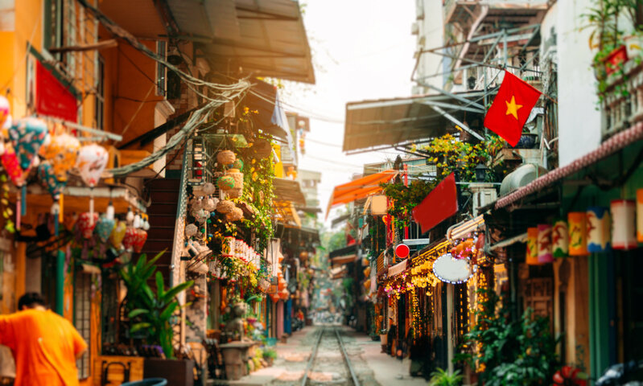
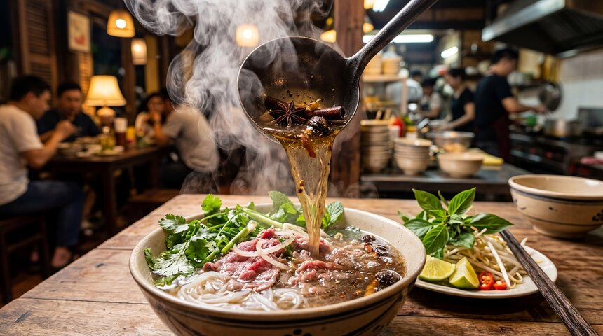

Ha Noi
Ha Noi is the capital city of Vietnam, known for its centuries-old architecture, rich culture, and vibrant street life. The city features numerous lakes, temples, and historical landmarks such as the Ho Chi Minh Mausoleum and the Old Quarter.
Ha Noi Road Railway Station

Pho is a traditional Vietnamese noodle soup consisting of broth, rice noodles, herbs, and meat, usually beef or chicken. It is a popular dish and originated in Ha Noi and throughout Vietnam.
